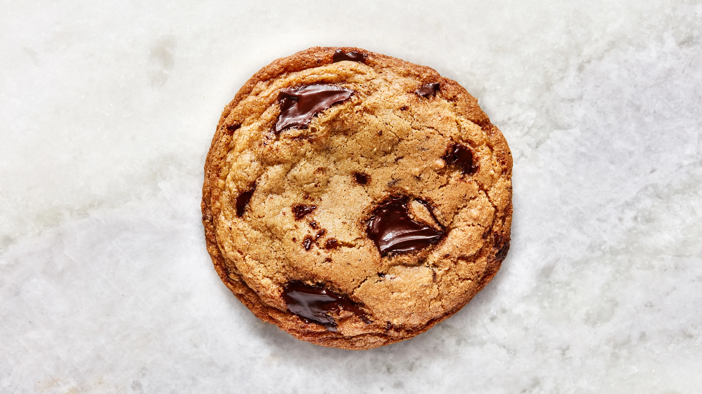

Brown Butter Chocolate Chip Cookies

These cookies are rooted in classic Toll House flavor, but browning the butter amps up the toasty notes and is key in developing the balance of crisp edges, while a high ratio of brown sugar to white sugar ensures chewy chocolate chip cookie centers. The amount of flour and the quality of the pure vanilla extract is important here; Chris recommends Heilala or Nielsen-Massey, which have enough heft to stand up to bitter dark chocolate. We highly recommend weighing your flour with a scale; if you don't have one, use a spoon to scoop the flour into a measuring cup until overflowing, and a straight edge (such as the back of a butter knife) to level it off.
Ingredients
- 200 g all-purpose flour
- 4 g kosher salt
- 4 g baking soda
- 169 g unsalted butter, divided
- 175 g dark brown sugar
- 43.75 g granulated sugar
- 1 large egg
- 2 large egg yolks
- 2 tsp vanilla extract
- 170 g bittersweet chocolate, coarsely chopped, or semisweet chocolate chips
Steps
- Place racks in upper and lower thirds of oven; preheat to 350°. Whisk 200 g all-purpose flour, 4 g kosher salt, and 4 g baking soda in a small bowl; set flour mixture aside.
- Cook 113 g (1 stick) unsalted butter in a large saucepan over medium heat, swirling often and scraping bottom of pan with a heatproof rubber spatula, until butter foams, then browns, about 4 minutes. Scrape melted butter and any brown bits to a large heatproof mixing bowl and let cool 1 minute. Cut remaining 56 g (1/2 stick) unsalted butter into small pieces and add to brown butter (it should start to melt but not foam and sizzle, so test with one piece before adding the rest).
- Once butter is melted, add 175 g dark brown sugar and 43.75 g granulated sugar and whisk, breaking up any clumps, until sugar is incorporated and no lumps remain. Add 1 large egg and 2 large egg yolks and whisk until sugar dissolves and mixture is smooth, about 30 seconds. Whisk in 2 tsp. vanilla extract. Using rubber spatula, fold reserved dry ingredients into butter mixture just until no dry spots remain, then fold in 170 g bittersweet chocolate, coarsely chopped, or semisweet chocolate chips. Put the cookie batter in the fridge or freezer and let chill until hard.
- Portion out 1.65 oz balls of dough and divide between 2 parchment-paper-lined rimmed baking sheets. Bake cookies, rotating sheets if cookies are browning very unevenly (otherwise, just leave them alone), until deep golden brown and firm around the edges, 8-10 minutes. Let cool on baking sheets.